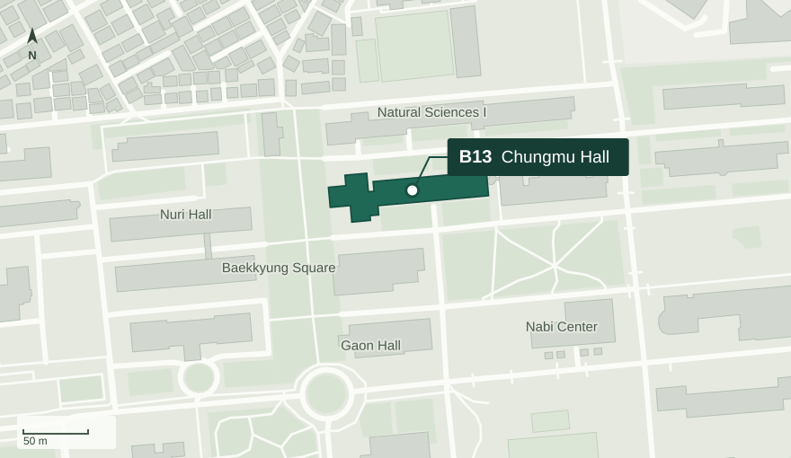

Contact
Daeyeon Campus
Chungmu Hall B13
Pukyong National University45 Yongso-ro, Nam-gu
Busan 48513, Republic of Korea Directions on Kakao Map Official campus map
Research inquiries
eseo@pknu.ac.kr
+82 51 629 6637

Explore the interactive map
Open Chungmu Hall in OpenStreetMap